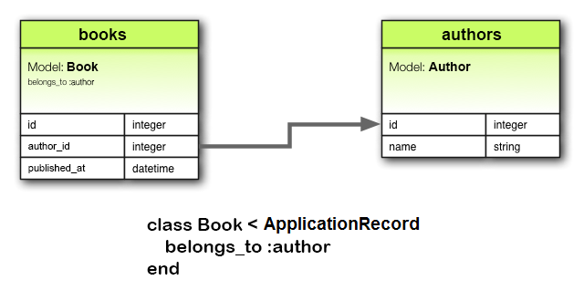
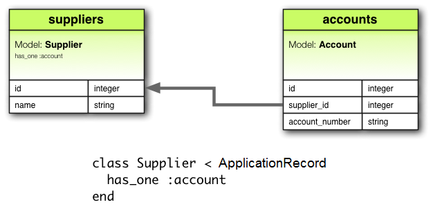
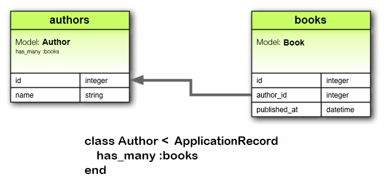
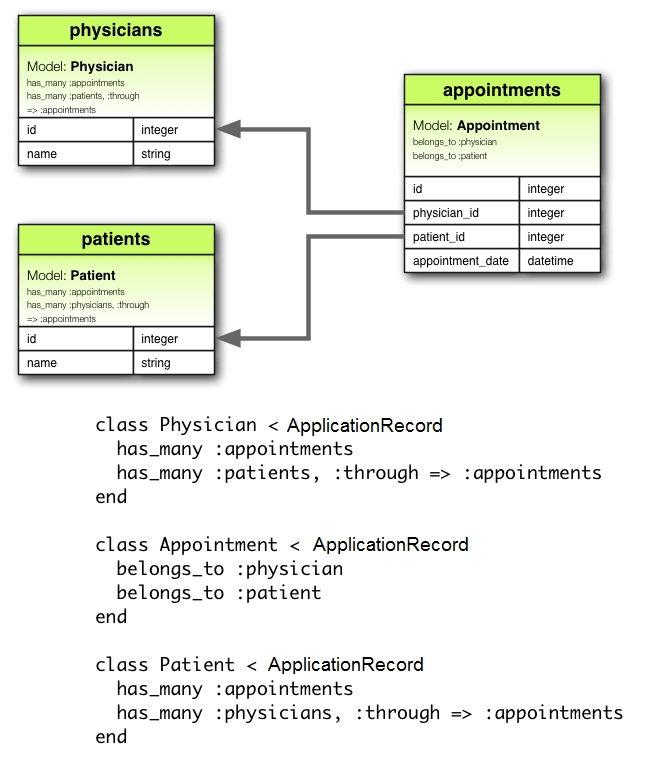
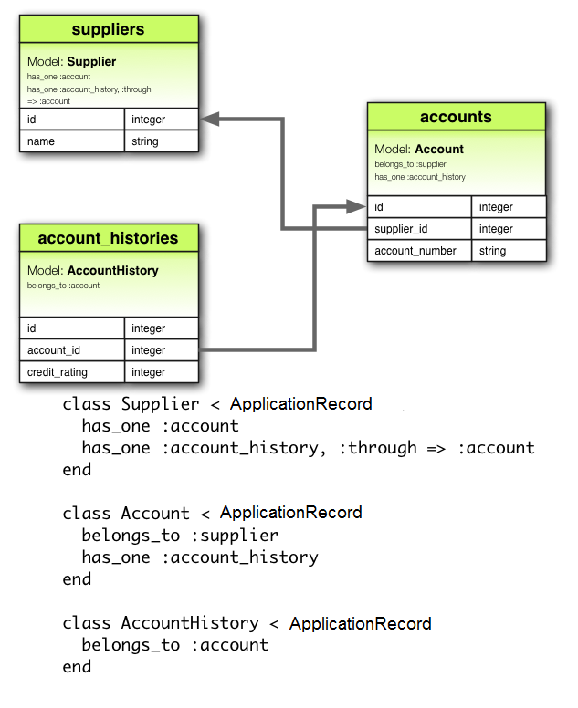
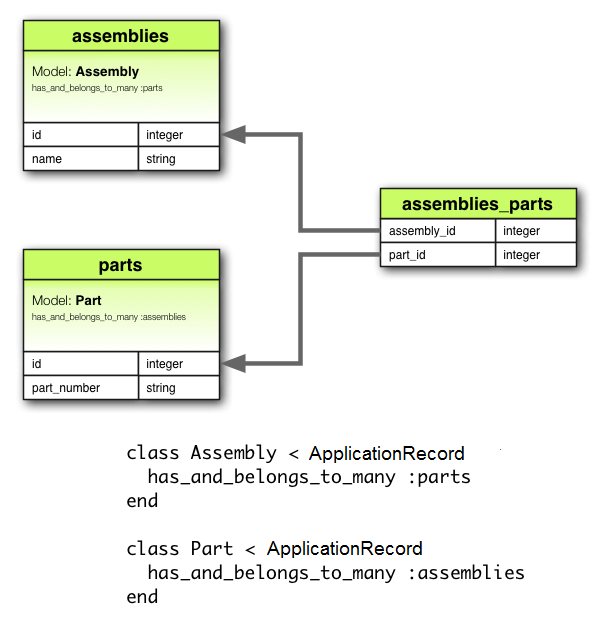
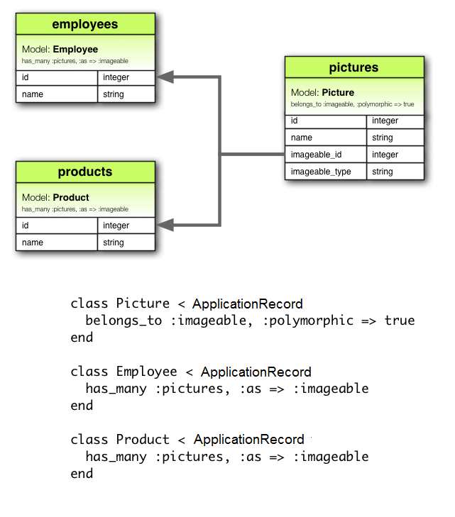

1 Why Associations?
¿Por qué las asociaciones?
En Rails, una association es una conexión entre dos modelos de Active Record. ¿Por qué necesitamos las asociaciones entre modelos? Porque hacen que las operaciones comunes sean más simples y fáciles en su código. Por ejemplo, considere una aplicación simple en Rails que incluye un modelo para autores y un modelo para libros. Cada autor puede tener muchos libros. Sin asociaciones, las declaraciones modelo se verían así:
class Author < ApplicationRecord
end
class Book < ApplicationRecord
end
Ahora, supongamos que deseamos agregar un nuevo libro para un autor existente. Necesitaríamos hacer algo como esto:
@book = Book.create(published_at: Time.now, author_id: @author.id)
O considere eliminar un autor y asegurarse de que todos sus libros se eliminen también:
@books = Book.where(author_id: @author.id)
@books.each do |book|
book.destroy
end
@author.destroy
Con las asociaciones de Active Record, podemos simplificar estas, y otras, operaciones declarando a Rails que hay una conexión entre los dos modelos. Aquí está el código revisado para configurar autores y libros:
class Author < ApplicationRecord
has_many :books, dependent: :destroy
end
class Book < ApplicationRecord
belongs_to :author
end
Con este cambio, es más fácil crear un nuevo libro para un autor en particular :
@book = @author.books.create(published_at: Time.now)
Eliminar un autor y todos sus libros es mucho más fácil:
@author.destroy
Para obtener más información sobre los diferentes tipos de asociaciones, lea la siguiente sección de esta guía. Esto es seguido por algunos consejos y trucos para trabajar con asociaciones, y luego por una referencia completa a los métodos y opciones para asociaciones en Rails.
2 The Types of Associations
Rails admite seis tipos de asociaciones:
belongs_tohas_onehas_manyhas_many :throughhas_one :throughhas_and_belongs_to_many
Las asociaciones se implementan mediante llamadas de estilo macro, para que se pueda agregar características declarativamente a sus modelos. Por ejemplo, al declarar que un modelo belongs_to otro, le indica a Rails que mantenga Primary Key-Foreign Key entre instancias de los dos modelos, y también obtiene una cantidad de métodos de utilidad agregados a su modelo.
En el resto de esta guía, aprenderá cómo declarar y utilizar las diversas formas de asociación. Pero primero, una introducción rápida a las situaciones en las que cada tipo de asociación es apropiado.
2.1 The belongs_to Association
Una asociación belongs_to establece una conexión con otro modelo, de modo que cada instancia del modelo declarante "belongs to" crea una instancia del otro modelo. Por ejemplo, si su aplicación incluye autores y libros, y cada libro puede asignarse exactamente a un autor, declarará el modelo de libro de esta manera:
class Book < ApplicationRecord
belongs_to :author
end

las asociaciones belongs_to deben utilizar el término singular. Si utilizó la forma pluralizada en el ejemplo anterior para la asociación author en el modelo Book e intentó crear la instancia con Book.create(authors: @author), se le informaría que había un "uninitialized constant Book::Authors". Esto se debe a que Rails infiere automáticamente el nombre de la clase del nombre de la asociación. Si el nombre de la asociación está incorrectamente pluralizado, entonces la clase inferida también estará incorrectamente pluralizada.
La migración correspondiente podría verse así:
class CreateBooks < ActiveRecord::Migration[6.0]
def change
create_table :authors do |t|
t.string :name
t.timestamps
end
create_table :books do |t|
t.belongs_to :author
t.datetime :published_at
t.timestamps
end
end
end
Cuando se usa solo, belongs_to produce una conexión unidireccional uno-a-uno. Por lo tanto, cada libro en el ejemplo anterior "conoce" a su autor, pero los autores no saben acerca de sus libros.
Para configurar una bi-directional association - use belong_to en combinación con unhas_one o has_many en el otro modelo.
belong_to no garantiza la coherencia de referencia, según en el caso de uso, es posible que también deba agregar una restricción de clave externa a nivel de base de datos en la columna de referencia, como esta:
create_table :books do |t|
t.belongs_to :author, foreign_key: true
# ...
end
2.2 The has_one Association
Una asociación has_one indica que otro modelo tiene una referencia a este modelo. Ese modelo se puede obtener a través de esta asociación.
Por ejemplo, si cada proveedor en su aplicación tiene solo una cuenta, declararía el modelo de proveedor de esta manera:
class Supplier < ApplicationRecord
has_one :account
end
La principal diferencia de belong_to es que la columna de enlace supplier_id se encuentra en la otra tabla:

La migración correspondiente podría verse así:
class CreateSuppliers < ActiveRecord::Migration[6.0]
def change
create_table :suppliers do |t|
t.string :name
t.timestamps
end
create_table :accounts do |t|
t.belongs_to :supplier
t.string :account_number
t.timestamps
end
end
end
Dependiendo del caso de uso, es posible que también necesite crear un índice único y/o una restricción de clave externa en la columna del 'supplier' para la tabla de 'accounts'. En esto caso, la definición de la columna podría verse así:
create_table :accounts do |t|
t.belongs_to :supplier, index: { unique: true }, foreign_key: true
# ...
end
Esta relación puede ser bi-directional cuando se usa en combinación con belong_to en el otro modelo.
2.3 The has_many Association
Una asociación has_many es similar ahas_one, pero indica una conexión de uno a muchos con otro modelo. A menudo encontrará esta asociación en el "otro lado" de una asociación belongs_to. Esta asociación indica que cada instancia del modelo tiene cero o más instancias de otro modelo. Por ejemplo, en una aplicación que contiene autores y libros, el modelo de autor podría declararse así:
class Author < ApplicationRecord
has_many :books
end
El nombre del otro modelo se pluraliza al declarar una asociación has_many.

La migración correspondiente podría verse así:
class CreateAuthors < ActiveRecord::Migration[6.0]
def change
create_table :authors do |t|
t.string :name
t.timestamps
end
create_table :books do |t|
t.belongs_to :author
t.datetime :published_at
t.timestamps
end
end
end
Dependiendo del caso de uso, generalmente es una buena idea crear un índice no-único y opcionalmente una restricción de clave externa en la columna de autor para la tabla de libros:
create_table :books do |t|
t.belongs_to :author, index: true, foreign_key: true
# ...
end
2.4 The has_many :through Association
Una asociación has_many: through se usa a menudo para configurar una conexión de muchos-a-muchos con otro modelo. Esta asociación indica que el modelo de declaración puede coincidir con cero o más instancias de otro modelo procediendo a través de otro modelo. Por ejemplo, considere una práctica médica donde los pacientes hacen citas para ver a los médicos. Las declaraciones de asociación relevantes podrían verse así:
class Physician < ApplicationRecord
has_many :appointments
has_many :patients, through: :appointments
end
class Appointment < ApplicationRecord
belongs_to :physician
belongs_to :patient
end
class Patient < ApplicationRecord
has_many :appointments
has_many :physicians, through: :appointments
end

La migración correspondiente podría verse así:
class CreateAppointments < ActiveRecord::Migration[6.0]
def change
create_table :physicians do |t|
t.string :name
t.timestamps
end
create_table :patients do |t|
t.string :name
t.timestamps
end
create_table :appointments do |t|
t.belongs_to :physician
t.belongs_to :patient
t.datetime :appointment_date
t.timestamps
end
end
end
La colección de modelos de combinación se puede gestionar a través de loshas_many association methods.
Por ejemplo, si asigna:
physician.patients = patients
Luego, se crean automáticamente nuevos modelos de unión para los objetos recién asociados. Si faltan algunos de los que existían anteriormente, sus filas de unión se eliminan automáticamente.
La eliminación automática de los modelos de combinación es directa, no se activan devoluciones de llamada de destrucción.
La asociación has_many :through también es útil para configurar "accesos directos" a través de asociaciones anidadas has_many. Por ejemplo, si un documento tiene muchas secciones y una sección tiene muchos párrafos, a veces es posible que desee obtener una colección simple de todos los párrafos del documento. Podrías configurarlo de esta manera:
class Document < ApplicationRecord
has_many :sections
has_many :paragraphs, through: :sections
end
class Section < ApplicationRecord
belongs_to :document
has_many :paragraphs
end
class Paragraph < ApplicationRecord
belongs_to :section
end
Especificado through: :sections, Rails ahora entenderá:
@document.paragraphs
2.5 The has_one :through Association
Una asociación has_one: through establece una conexión uno a uno con otro modelo. Esta asociación indica
que el modelo de declaración puede coincidir con una instancia de otro modelo procediendo through un tercer modelo.
Por ejemplo, si cada proveedor "supplier: tiene una cuenta "account" y cada cuenta "account" está asociada con una historia de cuenta "account history", entonces el
modelo de proveedor podría verse así:
class Supplier < ApplicationRecord
has_one :account
has_one :account_history, through: :account
end
class Account < ApplicationRecord
belongs_to :supplier
has_one :account_history
end
class AccountHistory < ApplicationRecord
belongs_to :account
end

La migración correspondiente podría verse así:
class CreateAccountHistories < ActiveRecord::Migration[6.0]
def change
create_table :suppliers do |t|
t.string :name
t.timestamps
end
create_table :accounts do |t|
t.belongs_to :supplier
t.string :account_number
t.timestamps
end
create_table :account_histories do |t|
t.belongs_to :account
t.integer :credit_rating
t.timestamps
end
end
end
2.6 The has_and_belongs_to_many Association
Una asociación has_and_belongs_to_many crea una conexión directa de muchos-a-muchos con otro modelo, sin ningún modelo intermedio. Por ejemplo, si su aplicación incluye ensamblajes "assemblies" y piezas "parts", cada ensamblaje tiene muchas piezas y cada parte aparece en muchos ensamblajes, puede declarar los modelos de esta manera:
class Assembly < ApplicationRecord
has_and_belongs_to_many :parts
end
class Part < ApplicationRecord
has_and_belongs_to_many :assemblies
end

La migración correspondiente podría verse así:
class CreateAssembliesAndParts < ActiveRecord::Migration[6.0]
def change
create_table :assemblies do |t|
t.string :name
t.timestamps
end
create_table :parts do |t|
t.string :part_number
t.timestamps
end
create_table :assemblies_parts, id: false do |t|
t.belongs_to :assembly
t.belongs_to :part
end
end
end
2.7 Choosing Between belongs_to and has_one
Si desea establecer una relación uno a uno entre dos modelos, necesitará agregar belong_to a uno y has_one al otro modelo. ¿Cómo sabes cuál es cuál?
La distinción radica en el lugar donde coloca la clave externa (va sobre la tabla para la clase que declara la asociación belongs_to), pero también debe reflexionar sobre el significado real de los datos. La relación has_one dice que uno de algo es tuyo, es decir, que algo te señala a ti. Por ejemplo, tiene más sentido decir que un proveedor posee una cuenta que una cuenta que posee un proveedor. Esto sugiere que las relaciones correctas son así:
class Supplier < ApplicationRecord
has_one :account
end
class Account < ApplicationRecord
belongs_to :supplier
end
La migración correspondiente podría verse así:
class CreateSuppliers < ActiveRecord::Migration[6.0]
def change
create_table :suppliers do |t|
t.string :name
t.timestamps
end
create_table :accounts do |t|
t.bigint :supplier_id
t.string :account_number
t.timestamps
end
add_index :accounts, :supplier_id
end
end
El uso de t.bigint: supplier_id hace que el nombre de la clave externa sea obvio y explícito. En las versiones actuales de Rails, puede abstraer este detalle de implementación utilizando t.references :supplier en su lugar.
2.8 Choosing Between has_many :through and has_and_belongs_to_many
Rails ofrece dos formas diferentes de declarar una relación de muchos a muchos entre los modelos. La primera forma es usar has_and_belongs_to_many, que te permite hacer la asociación directamente:
class Assembly < ApplicationRecord
has_and_belongs_to_many :parts
end
class Part < ApplicationRecord
has_and_belongs_to_many :assemblies
end
La segunda forma de declarar una relación de muchos a muchos es usar has_many :through. Esto hace que la asociación sea indirecta, a través de un modelo de unión:
class Assembly < ApplicationRecord
has_many :manifests
has_many :parts, through: :manifests
end
class Manifest < ApplicationRecord
belongs_to :assembly
belongs_to :part
end
class Part < ApplicationRecord
has_many :manifests
has_many :assemblies, through: :manifests
end
La regla general más simple es que debe configurar una relación has_many :through si necesita trabajar con el modelo de relación como una entidad independiente. Si no necesita hacer nada con el modelo de relación, puede ser más sencillo configurar una relación has_and_belongs_to_many (aunque deberá recordar crear la tabla de unión en la base de datos).
Debe usar has_many :through si necesita validaciones, devoluciones de llamada o atributos adicionales en el modelo de combinación.
2.9 Polymorphic Associations
Un giro un poco más avanzado en las asociaciones es la polymorphic association. Con asociaciones polimórficas, un modelo puede pertenecer a más de otro modelo, en una sola asociación. Por ejemplo, puede tener un modelo de imagen que pertenece a un modelo de empleado o un modelo de producto. Así es como se podría declarar esto:
class Picture < ApplicationRecord
belongs_to :imageable, polymorphic: true
end
class Employee < ApplicationRecord
has_many :pictures, as: :imageable
end
class Product < ApplicationRecord
has_many :pictures, as: :imageable
end
Puede pensar en una declaración polimórfica belong_to como la configuración de una interfaz que cualquier otro modelo puede usar. Desde una instancia del modelo Employee, puede recuperar una colección de imágenes: @employee.pictures.
Del mismo modo, puede recuperar @product.pictures.
Si tiene una instancia del modelo Picture, puede acceder a su padre a través de@picture.imageable. Para que esto funcione, debe declarar tanto una columna de clave externa como una columna de tipo en el modelo que declara la interfaz polimórfica:
class CreatePictures < ActiveRecord::Migration[6.0]
def change
create_table :pictures do |t|
t.string :name
t.bigint :imageable_id
t.string :imageable_type
t.timestamps
end
add_index :pictures, [:imageable_type, :imageable_id]
end
end
Esta migración se puede simplificar usando el formulario t.references:
class CreatePictures < ActiveRecord::Migration[6.0]
def change
create_table :pictures do |t|
t.string :name
t.references :imageable, polymorphic: true
t.timestamps
end
end
end

2.10 Self Joins
Al diseñar un modelo de datos, a veces encontrará un modelo que debería tener una relación consigo mismo. Por ejemplo, es posible que desee almacenar todos los empleados en un único modelo de base de datos, pero poder rastrear las relaciones, como entre el gerente y los subordinados. Esta situación se puede modelar con asociaciones de autounión:
class Employee < ApplicationRecord
has_many :subordinates, class_name: "Employee",
foreign_key: "manager_id"
belongs_to :manager, class_name: "Employee", optional: true
end
Con esta configuración, puede recuperar @employee.subordinates y @employee.manager.
En sus migraciones / esquema, agregará una columna de referencias al modelo mismo.
class CreateEmployees < ActiveRecord::Migration[6.0]
def change
create_table :employees do |t|
t.references :manager
t.timestamps
end
end
end
3 Tips, Tricks, and Warnings
Aquí hay algunas cosas que debe saber para hacer un uso eficiente de las asociaciones Active Record en sus aplicaciones Rails:
- Controlling caching
- Avoiding name collisions
- Updating the schema
- Controlling association scope
- Bi-directional associations
3.1 Controlling Caching
Todos los métodos de asociación se basan en el almacenamiento en caché, lo que mantiene el resultado de la consulta más reciente disponible para futuras operaciones. El caché incluso se comparte entre los métodos. Por ejempo:
author.books # retrieves books from the database
author.books.size # uses the cached copy of books
author.books.empty? # uses the cached copy of books
Pero, ¿qué sucede si desea volver a cargar el caché, porque los datos podrían haber sido modificados por alguna otra parte de la aplicación? Simplemente llame a reload en la asociación:
author.books # retrieves books from the database
author.books.size # uses the cached copy of books
author.books.reload.empty? # discards the cached copy of books
# and goes back to the database
3.2 Avoiding Name Collisions
No es libre de usar cualquier nombre para sus asociaciones. Debido a que crear una asociación agrega un método con ese nombre al modelo, es una mala idea darle un nombre a una asociación que ya se utiliza para un método de instancia de ActiveRecord::Base. El método de asociación anularía el método base y rompería las cosas. Por ejemplo, "atributos" o "conexión" son nombres malos para las asociaciones.
3.3 Updating the Schema
Las asociaciones son extremadamente útiles, pero no son mágicas. Usted es responsable de mantener el esquema de su base de datos para que coincida con sus asociaciones. En la práctica, esto significa dos cosas, dependiendo de qué tipo de asociaciones esté creando. Para las asociaciones belong_to necesita crear claves foráneas, y para las asociacioneshas_and_belongs_to_many necesita crear la tabla de unión apropiada.
3.3.1 Creating Foreign Keys for belongs_to Associations
Cuando declara una asociación belong_to, debe crear claves foráneas según corresponda. Por ejemplo, considere este modelo:
class Book < ApplicationRecord
belongs_to :author
end
Esta declaración debe estar respaldada por una columna de clave externa correspondiente en la tabla de libros. Para una tabla completamente nueva, la migración podría verse así:
class CreateBooks < ActiveRecord::Migration[6.0]
def change
create_table :books do |t|
t.datetime :published_at
t.string :book_number
t.references :author
end
end
end
Mientras que para una tabla existente, podría verse así:
class AddAuthorToBooks < ActiveRecord::Migration[6.0]
def change
add_reference :books, :author
end
end
Si desea [enforce referential integrity at the database level](/active_record_migrations.html#foreign-keys, agregue la opción foreign_key: true a las declaraciones de columna' referencia 'anteriores.
3.3.2 Creating Join Tables for has_and_belongs_to_many Associations
Si crea una asociación has_and_belongs_to_many, debe crear explícitamente la tabla de unión. A menos que el nombre de la tabla de unión se especifique explícitamente usando la opción :join_table, Active Record crea el nombre usando el orden léxico de los nombres de clase. Por lo tanto, una unión entre los modelos de autor y libro dará el nombre predeterminado de la tabla de unión de "author_books" porque "a" supera "b" en el orden léxico.
La precedencia entre los nombres de modelo se calcula utilizando el operador <=> para String. Esto significa que si las cadenas son de diferentes longitudes, y las cadenas son iguales en comparación con la longitud más corta, entonces la cadena más larga se considera de mayor precedencia léxica que la más corta. Por ejemplo, uno esperaría que las tablas "paper_boxes" y "papers" generen un nombre de tabla de unión de "papers_paper_boxes" debido a la longitud del nombre "paper_boxes", pero de hecho genera un nombre de tabla de unión de "paper_boxes_papers" (porque el guión bajo '\ ' es lexicográficamente _less que 's' en codificaciones comunes).
Cualquiera sea el nombre, debe generar manualmente la tabla de unión con una migración adecuada. Por ejemplo, considere estas asociaciones:
class Assembly < ApplicationRecord
has_and_belongs_to_many :parts
end
class Part < ApplicationRecord
has_and_belongs_to_many :assemblies
end
Estos deben estar respaldados por una migración para crear la tabla assemblies_parts. Esta tabla debe crearse sin una clave primaria:
class CreateAssembliesPartsJoinTable < ActiveRecord::Migration[6.0]
def change
create_table :assemblies_parts, id: false do |t|
t.bigint :assembly_id
t.bigint :part_id
end
add_index :assemblies_parts, :assembly_id
add_index :assemblies_parts, :part_id
end
end
Pasamos id: false acreate_table porque esa tabla no representa un modelo. Eso es necesario para que la asociación funcione correctamente. Si observa algún comportamiento extraño en una asociación has_and_belongs_to_many como ID de modelo destrozado, o excepciones sobre ID en conflicto, es probable que haya olvidado esa parte.
También puedes usar el método create_join_table
class CreateAssembliesPartsJoinTable < ActiveRecord::Migration[6.0]
def change
create_join_table :assemblies, :parts do |t|
t.index :assembly_id
t.index :part_id
end
end
end
3.4 Controlling Association Scope
Por defecto, las asociaciones buscan objetos solo dentro del alcance del módulo actual. Esto puede ser importante cuando declara modelos de Active Record dentro de un módulo. Por ejemplo:
module MyApplication
module Business
class Supplier < ApplicationRecord
has_one :account
end
class Account < ApplicationRecord
belongs_to :supplier
end
end
end
Esto funcionará bien, porque tanto la clase Supplier como la claseAccount están definidas dentro del mismo alcance. Pero lo siguiente no funcionará, porque Supplier yAccount se definen en diferentes ámbitos:
module MyApplication
module Business
class Supplier < ApplicationRecord
has_one :account
end
end
module Billing
class Account < ApplicationRecord
belongs_to :supplier
end
end
end
Para asociar un modelo con un modelo en un espacio de nombres diferente, debe especificar el nombre completo de la clase en su declaración de asociación:
module MyApplication
module Business
class Supplier < ApplicationRecord
has_one :account,
class_name: "MyApplication::Billing::Account"
end
end
module Billing
class Account < ApplicationRecord
belongs_to :supplier,
class_name: "MyApplication::Business::Supplier"
end
end
end
3.5 Bi-directional Associations
Es normal que las asociaciones trabajen en dos direcciones, lo que requiere una declaración en dos modelos diferentes:
class Author < ApplicationRecord
has_many :books
end
class Book < ApplicationRecord
belongs_to :author
end
Active Record intentará identificar automáticamente que estos dos modelos comparten una asociación bidireccional basada en el nombre de la asociación. De esta manera, Active Record solo cargará una copia del objeto Author, haciendo que su aplicación sea más eficiente y evitando datos inconsistentes:
a = Author.first
b = a.books.first
a.first_name == b.author.first_name # => true
a.first_name = 'David'
a.first_name == b.author.first_name # => true
Active Record admite la identificación automática para la mayoría de las asociaciones con nombres estándar. Sin embargo, Active Record no identificará automáticamente las asociaciones bidireccionales que contienen un alcance o cualquiera de las siguientes opciones:
:through:foreign_key
Por ejemplo, considere las siguientes declaraciones de modelo:
class Author < ApplicationRecord
has_many :books
end
class Book < ApplicationRecord
belongs_to :writer, class_name: 'Author', foreign_key: 'author_id'
end
Active Record ya no reconocerá automáticamente la asociación bidireccional:
a = Author.first
b = a.books.first
a.first_name == b.writer.first_name # => true
a.first_name = 'David'
a.first_name == b.writer.first_name # => false
Active Record proporciona la opción :inverse_of para que pueda declarar explícitamente asociaciones bidireccionales:
class Author < ApplicationRecord
has_many :books, inverse_of: 'writer'
end
class Book < ApplicationRecord
belongs_to :writer, class_name: 'Author', foreign_key: 'author_id'
end
Al incluir la opción :inverse_of en la declaración de asociación has_many, Active Record ahora reconocerá la asociación bidireccional:
a = Author.first
b = a.books.first
a.first_name == b.writer.first_name # => true
a.first_name = 'David'
a.first_name == b.writer.first_name # => true
4 Detailed Association Reference
Las siguientes secciones proporcionan los detalles de cada tipo de asociación, incluidos los métodos que agregan y las opciones que puede utilizar al declarar una asociación.
4.1 belongs_to Association Reference
En términos de base de datos, la asociación belong_to dice que la tabla de este modelo contiene una columna que representa una referencia a otra tabla.
Esto se puede usar para configurar relaciones uno a uno o uno a muchos, dependiendo de la configuración.
Si la tabla de la otra clase contiene la referencia en una relación uno a uno, entonces debería usar has_one en su lugar.
4.1.1 Methods Added by belongs_to
Cuando declaras una asociación belong_to, la clase declarante automáticamente gana 6 métodos relacionados con la asociación:
associationassociation=(associate)build_association(attributes = {})create_association(attributes = {})create_association!(attributes = {})reload_association
En todos estos métodos, association se reemplaza con el símbolo pasado como el primer argumento para belongs_to. Por ejemplo, dada la declaración:
class Book < ApplicationRecord
belongs_to :author
end
Cada instancia del modelo Book tendrá estos métodos:
author
author=
build_author
create_author
create_author!
reload_author
Al inicializar una nueva asociación has_one o belong_to, debe usar el prefijo build_ para construir la asociación, en lugar del método association.build que se usaría para las asociaciones has_many o has_and_belongs_to_many. Para crear uno, use el prefijo create_.
4.1.1.1 association
El método association devuelve el objeto asociado, si lo hay. Si no se encuentra ningún objeto asociado, devuelve nil.
@author = @book.author
Si el objeto asociado ya se ha recuperado de la base de datos para este objeto, se devolverá la versión en caché. Para anular este comportamiento (y forzar una lectura de la base de datos), llame a #reload_association en el objeto padre.
@author = @book.reload_author
4.1.1.2 association=(associate)
El método association = asigna un objeto asociado a este objeto. Detrás de escena, esto significa extraer la clave primaria del objeto asociado y establecer la clave externa de este objeto en el mismo valor.
@book.author = @author
4.1.1.3 build_association(attributes = {})
El método build_association devuelve un nuevo objeto del tipo asociado. Este objeto se instanciará a partir de los atributos pasados, y se establecerá el enlace a través de la clave externa de este objeto, pero el objeto asociado no aún se guardará.
@author = @book.build_author(author_number: 123,
author_name: "John Doe")
4.1.1.4 create_association(attributes = {})
El método create_association devuelve un nuevo objeto del tipo asociado. Este objeto se instanciará a partir de los atributos pasados, se establecerá el enlace a través de la clave externa de este objeto y, una vez que pase todas las validaciones especificadas en el modelo asociado, el objeto asociado se guardará.
@author = @book.create_author(author_number: 123,
author_name: "John Doe")
4.1.1.5 create_association!(attributes = {})
Hace lo mismo que create_association anterior, pero genera ActiveRecord::RecordInvalid si el registro no es válido.
4.1.2 Options for belongs_to
Si bien Rails utiliza valores predeterminados inteligentes que funcionarán bien en la mayoría de las situaciones, puede haber ocasiones en las que desee personalizar el comportamiento de la referencia de asociación belong_to. Dichas personalizaciones se pueden lograr fácilmente pasando opciones y bloques de alcance al crear la asociación. Por ejemplo, esta asociación usa dos de estas opciones:
class Book < ApplicationRecord
belongs_to :author, touch: :books_updated_at,
counter_cache: true
end
La asociación belong_to admite estas opciones:
:autosave:class_name:counter_cache:dependent:foreign_key:primary_key:inverse_of:polymorphic:touch:validate:optional
4.1.2.1 :autosave
Si configura la opción :autosave entrue, Rails guardará los miembros de la asociación cargados y destruirá los miembros que están marcados para su destrucción cada vez que guarde el objeto padre. Configurar :autosave en false no es lo mismo que no configurar la opción :autosave. Si la opción :autosave no está presente, los nuevos objetos asociados se guardarán, pero los objetos asociados actualizados no se guardarán.
4.1.2.2 :class_name
Si el nombre del otro modelo no puede derivarse del nombre de la asociación, puede usar la opción :class_name para proporcionar el nombre del modelo. Por ejemplo, si un libro pertenece a un autor, pero el nombre real del modelo que contiene los autores es Patron, configuraría las cosas de esta manera:
class Book < ApplicationRecord
belongs_to :author, class_name: "Patron"
end
4.1.2.3 :counter_cache
La opción :counter_cache se puede utilizar para hacer que la búsqueda del número de objetos pertenecientes sea más eficiente. Considere estos modelos:
class Book < ApplicationRecord
belongs_to :author
end
class Author < ApplicationRecord
has_many :books
end
Con estas declaraciones, solicitar el valor de @author.books.size requiere realizar una llamada a la base de datos para realizar una consulta COUNT(*). Para evitar esta llamada, puede agregar un caché de contador al modelo belonging:
class Book < ApplicationRecord
belongs_to :author, counter_cache: true
end
class Author < ApplicationRecord
has_many :books
end
Con esta declaración, Rails mantendrá el valor de caché actualizado y luego devolverá ese valor en respuesta al método size.
Aunque la opción :counter_cache se especifica en el modelo que incluye
la declaración belongs_to, la columna real debe agregarse al modelo
associated (has_many). En el caso anterior, deberá agregar una
columna denominada books_count para el modeloAuthor.
Puede anular el nombre de columna predeterminado especificando un nombre de columna personalizado en
la declaración counter_cache en lugar de true. Por ejemplo, para usar
count_of_books en lugar debooks_count:
class Book < ApplicationRecord
belongs_to :author, counter_cache: :count_of_books
end
class Author < ApplicationRecord
has_many :books
end
Solo necesita especificar la opción :counter_cache en el
lado de la asociación belong_sto.
Las columnas de caché de contador se agregan a la lista de atributos de solo lectura del modelo que contiene a través de attr_readonly.
4.1.2.4 :dependent
Si se configura la opción :dependent para:
:destroy, cuando se destruye el objeto, se llamará adestroyen su objetos asociados:delete, cuando el objeto es destruido, todos sus objetos asociados serán eliminado directamente de la base de datos sin llamar a su métododestroy.
No se debe especificar esta opción en una asociación belongs_to que esté conectada con una asociación has_many en la otra clase. Hacerlo puede generar registros huérfanos en su base de datos.
4.1.2.5 :foreign_key
Por convención, Rails supone que la columna utilizada para contener la clave externa en este modelo es el nombre de la asociación con el sufijo _id agregado. La opción :foreign_key le permite establecer el nombre de la clave externa directamente:
class Book < ApplicationRecord
belongs_to :author, class_name: "Patron",
foreign_key: "patron_id"
end
En cualquier caso, Rails no creará columnas de clave externa para usted. Debe definirlos explícitamente como parte de sus migraciones.
4.1.2.6 :primary_key
Por convención, Rails supone que la columna id se usa para mantener la clave primaria
de sus mesas. La opción :primary_key le permite especificar una columna diferente.
Por ejemplo, dado que tenemos una tabla users conguid como clave principal. Si queremos que una tabla todos separada contenga la clave externauser_id en la columna guid, entonces podemos usar primary_key para lograr esto así:
class User < ApplicationRecord
self.primary_key = 'guid' # primary key is guid and not id
end
class Todo < ApplicationRecord
belongs_to :user, primary_key: 'guid'
end
Cuando ejecutamos @user.todos.create, entonces el registro @todo tendrá su
valor user_id como el valor guid de @user.
4.1.2.7 :inverse_of
La opción :inverse_of especifica el nombre de la asociación has_many o has_one que es el inverso de esta asociación.
class Author < ApplicationRecord
has_many :books, inverse_of: :author
end
class Book < ApplicationRecord
belongs_to :author, inverse_of: :books
end
4.1.2.8 :polymorphic
Pasar true a la opción :polymorphic indica que esta es una asociación polimórfica. Las asociaciones polimórficas se discutieron en detalle anteriormente en esta guía.
4.1.2.9 :touch
Si configura la opción :touch en true, entonces le marcara el tiempo updated_at o updated_on y en el objeto asociado se establecerá en la hora actual cada vez que este objeto se guarde o destruya:
class Book < ApplicationRecord
belongs_to :author, touch: true
end
class Author < ApplicationRecord
has_many :books
end
En este caso, guardar o destruir un libro actualizará la marca de tiempo del autor asociado. También puede especificar un atributo de marca de tiempo particular para actualizar:
class Book < ApplicationRecord
belongs_to :author, touch: :books_updated_at
end
4.1.2.10 :validate
Si configura la opción :validate entrue, los objetos asociados se validarán cada vez que se guarde este objeto. Por defecto, esto es false: los objetos asociados no se validarán cuando se guarde este objeto.
4.1.2.11 :optional
Si establece la opción :optional en true, entonces la presencia del asociado
objeto no será validado. Por defecto, esta opción está configurada en false.
4.1.3 Scopes for belongs_to
Puede haber ocasiones en las que se desee personalizar la consulta utilizada por belongs_to. Dichas personalizaciones se pueden lograr a través de un bloque de alcance. Por ejemplo:
class Book < ApplicationRecord
belongs_to :author, -> { where active: true }
end
Puede usar cualquiera de los metodos estándar querying methods dentro del bloque de alcance. Los siguientes se analizan a continuación:
whereincludesreadonlyselect
4.1.3.1 where
El método where le permite especificar las condiciones que debe cumplir el objeto asociado.
class Book < ApplicationRecord
belongs_to :author, -> { where active: true }
end
4.1.3.2 includes
Puede usar el método includes para especificar asociaciones de segundo orden que deberían cargarse cuando se usa esta asociación. Por ejemplo, considere estos modelos:
class Chapter < ApplicationRecord
belongs_to :book
end
class Book < ApplicationRecord
belongs_to :author
has_many :chapters
end
class Author < ApplicationRecord
has_many :books
end
Si con frecuencia recupera autores directamente de los capítulos (@chapter.book.author), puede hacer que su código sea algo más eficiente al incluir autores en la asociación de capítulos a libros:
class Chapter < ApplicationRecord
belongs_to :book, -> { includes :author }
end
class Book < ApplicationRecord
belongs_to :author
has_many :chapters
end
class Author < ApplicationRecord
has_many :books
end
No es necesario usar include para asociaciones inmediatas, es decir, si tiene Book belong_to: author, entonces el autor se carga automáticamente cuando es necesario.
4.1.3.3 readonly
Si usa readonly, el objeto asociado será de solo lectura cuando se recupere a través de la asociación.
4.1.3.4 select
El método select le permite anular la cláusula SQL SELECT que se utiliza para recuperar datos sobre el objeto asociado. Por defecto, Rails recupera todas las columnas.
Si usa el método select en una asociación belong_to, también debe configurar la opción :foreign_key para garantizar los resultados correctos.
4.1.4 Do Any Associated Objects Exist?
Se puede ver si existen objetos asociados utilizando el método association.nil?:
if @book.author.nil?
@msg = "No author found for this book"
end
4.1.5 When are Objects Saved?
Asignar un objeto a una asociación belongs_to no se guardara automáticamente el objeto. Tampoco guarda el objeto asociado.
4.2 has_one Association Reference
La asociación has_one crea un partido uno a uno con otro modelo. En términos de base de datos, esta asociación dice que la otra clase contiene la clave foránea. Si esta clase contiene la clave foránea, entonces deberías usar belong_to en su lugar.
associationassociation=(associate)build_association(attributes = {})create_association(attributes = {})create_association!(attributes = {})reload_association
En todos estos métodos, asociación se reemplaza con el símbolo pasado como el primer argumento parahas_one. Por ejemplo, dada la declaración:
class Supplier < ApplicationRecord
has_one :account
end
Cada instancia del modelo Supplier tendrá estos métodos:
account
account=
build_account
create_account
create_account!
reload_account
Al inicializar una nueva asociación has_one obelong_to, debe usar el prefijo build_ para construir la asociación, en lugar del método association.build que se usaría para las asociaciones has_many o has_and_belongs_to_many. Para crear uno, use el prefijo create_.
4.2.1 association
El método association devuelve el objeto asociado, si lo hay. Si no se encuentra ningún objeto asociado, devuelve nil.
@account = @supplier.account
Si el objeto asociado ya se ha recuperado de la base de datos para este objeto, se devolverá la versión en caché. Para anular este comportamiento (y forzar una lectura de la base de datos), llame a #reload_association en el objeto padre.
@account = @supplier.reload_account
4.2.1.1 association=(associate)
El método association = asigna un objeto asociado a este objeto. Detrás de escena, esto significa extraer la clave primaria de este objeto y establecer la clave externa del objeto asociado al mismo valor.
@supplier.account = @account
4.2.1.2 build_association(attributes = {})
El método build_association devuelve un nuevo objeto del tipo asociado. Este objeto se instanciará a partir de los atributos pasados, y se establecerá el enlace a través de su clave externa, pero el objeto asociado no aún se guardará.
@account = @supplier.build_account(terms: "Net 30")
4.2.1.3 create_association(attributes = {})
El método create_association devuelve un nuevo objeto del tipo asociado. Este objeto se instanciará a partir de los atributos pasados, se establecerá el enlace a través de su clave externa y, una vez que pase todas las validaciones especificadas en el modelo asociado, el objeto asociado se guardará.
@account = @supplier.create_account(terms: "Net 30")
4.2.1.4 create_association!(attributes = {})
Hace lo mismo que create_association anterior, pero genera ActiveRecord::RecordInvalid si el registro no es válido.
4.2.2 Options for has_one
Rails utiliza valores predeterminados inteligentes que funcione bien en la mayoría de las situaciones, puede haber ocasiones en las que desee personalizar el comportamiento de la referencia de asociación has_one. Dichas personalizaciones se pueden lograr fácilmente pasando opciones cuando crea la asociación. Por ejemplo, esta asociación usa dos de estas opciones:
class Supplier < ApplicationRecord
has_one :account, class_name: "Billing", dependent: :nullify
end
La asociación has_one admite estas opciones:
:as:autosave:class_name:dependent:foreign_key:inverse_of:primary_key:source:source_type:through:touch:validate
4.2.2.1 :as
Establecer la opción :as indica que esta es una asociación polimórfica. Las asociaciones polimórficas se discutieron en detalle earlier in this guide.
4.2.2.2 :autosave
Si configura la opción :autosave en true, Rails guardará los miembros de la asociación cargados y destruirá los miembros que están marcados para su destrucción cada vez que guarde el objeto padre. Configurar :autosave en false no es lo mismo que no configurar la opción :autosave. Si la opción :autosave no está presente, los nuevos objetos asociados se guardarán, pero los objetos asociados actualizados no se guardarán.
4.2.2.3 :class_name
Si el nombre del otro modelo no puede derivarse del nombre de la asociación, puede usar la opción :class_name para proporcionar el nombre del modelo. Por ejemplo, si un proveedor tiene una cuenta, pero el nombre real del modelo que contiene las cuentas es 'Facturación', configuraría las cosas de esta manera:
class Supplier < ApplicationRecord
has_one :account, class_name: "Billing"
end
4.2.2.4 :dependent
Controla lo que le sucede al objeto asociado cuando su propietario es destruido:
-
:destroyhace que el objeto asociado también sea destruido -
:deletehace que el objeto asociado se elimine directamente de la base de datos (por lo que las devoluciones de llamada no se ejecutarán) -
:nullifyhace que la clave foránea se establezca enNULL. La columna de tipo polimórfico también se anula en asociaciones polimórficas. Las devoluciones de llamada no se ejecutan. -
:restrict_with_exceptionhace que se genere una excepciónActiveRecord::DeleteRestrictionErrorsi hay un registro asociado -
:restrict_with_errorhace que se agregue un error al propietario si hay un objeto asociado
Es necesario no establecer o dejar la opción :nullify para esas asociaciones
que tienen restricciones de base de datos NOT NULL. Si no establece dependent en
destruir tales asociaciones no podrá cambiar el objeto asociado
porque la clave externa del objeto asociado inicial se establecerá en
valor NULL no permitido.
4.2.2.5 :foreign_key
Por convención, Rails supone que la columna utilizada para mantener la clave externa en el otro modelo es el nombre de este modelo con el sufijo _id agregado. La opción :foreign_key le permite establecer el nombre de la clave externa directamente:
class Supplier < ApplicationRecord
has_one :account, foreign_key: "supp_id"
end
En cualquier caso, Rails no creará columnas de clave externa para usted. Debe definirlos explícitamente como parte de sus migraciones.
4.2.2.6 :inverse_of
La opción :inverse_of especifica el nombre de la asociación belongs_to que es el inverso de esta asociación.
class Supplier < ApplicationRecord
has_one :account, inverse_of: :supplier
end
class Account < ApplicationRecord
belongs_to :supplier, inverse_of: :account
end
4.2.2.7 :primary_key
Por convención, Rails supone que la columna utilizada para contener la clave primaria de este modelo es id. Puede anular esto y especificar explícitamente la clave primaria con la opción :primary_key.
4.2.2.8 :source
La opción :source especifica el nombre de asociación de origen para una asociación has_one :through.
class Book < ApplicationRecord
has_one :format, polymorphic: true
has_one :dust_jacket, through: :format, source: :dust_jacket, source_type: "Hardback"
end
class Paperback < ApplicationRecord; end
class Hardback < ApplicationRecord
has_one :dust_jacket
end
class DustJacket < ApplicationRecord; end
4.2.2.9 :through
La opción :through especifica un modelo de unión a través del cual realizar la consulta. Las asociaciones has_one :through se discutieron en detalle earlier in this guide.
4.2.2.10 :touch
Si configura la opción :touch en true, entonces la marca de tiempo updated_at o updated_on en el objeto asociado se establecerá en la hora actual cada vez que este objeto se guarde o destruya:
class Supplier < ApplicationRecord
has_one :account, touch: true
end
class Account < ApplicationRecord
belongs_to :supplier
end
En este caso, guardar o destruir un proveedor actualizará la marca de tiempo en la cuenta asociada. También puede especificar un atributo de marca de tiempo particular para actualizar:
class Supplier < ApplicationRecord
has_one :account, touch: :suppliers_updated_at
end
4.2.2.11 :validate
Si configura la opción :validate entrue, los objetos asociados se validarán cada vez que guarde este objeto. Por defecto, esto es false: los objetos asociados no se validarán cuando se guarde este objeto.
4.2.3 Scopes for has_one
Puede haber ocasiones en que desee personalizar la consulta utilizada por has_one. Dichas personalizaciones se pueden lograr a través de un bloque de alcance. Por ejemplo:
class Supplier < ApplicationRecord
has_one :account, -> { where active: true }
end
Puede usar cualquiera de los querying methods dentro del bloque de alcance. Los siguientes se analizan a continuación:
whereincludesreadonlyselect
4.2.3.1 where
El método where le permite especificar las condiciones que debe cumplir el objeto asociado.
class Supplier < ApplicationRecord
has_one :account, -> { where "confirmed = 1" }
end
4.2.3.2 includes
Puede usar el método includes para especificar asociaciones de segundo orden que deberían cargarse cuando se usa esta asociación. Por ejemplo, considere estos modelos:
class Supplier < ApplicationRecord
has_one :account
end
class Account < ApplicationRecord
belongs_to :supplier
belongs_to :representative
end
class Representative < ApplicationRecord
has_many :accounts
end
Si con frecuencia recupera representantes directamente de los proveedores (@supplier.account.representative), puede hacer que su código sea algo más eficiente al incluir representantes en la asociación de proveedores a cuentas:
class Supplier < ApplicationRecord
has_one :account, -> { includes :representative }
end
class Account < ApplicationRecord
belongs_to :supplier
belongs_to :representative
end
class Representative < ApplicationRecord
has_many :accounts
end
4.2.3.3 readonly
Si utiliza el método readonly, el objeto asociado será de solo lectura cuando se recupere mediante la asociación.
4.2.3.4 select
El método select le permite anular la cláusula SQLSELECT que se utiliza para recuperar datos sobre el objeto asociado. Por defecto, Rails recupera todas las columnas.
4.2.4 Do Any Associated Objects Exist?
Puede ver si existen objetos asociados utilizando el método association.nil?:
if @supplier.account.nil?
@msg = "No account found for this supplier"
end
4.2.5 When are Objects Saved?
Cuando asigna un objeto a una asociación has_one, ese objeto se guarda automáticamente (para actualizar su clave externa). Además, cualquier objeto que se reemplaza también se guarda automáticamente, porque su clave externa también cambiará.
Si alguno de estos guardados falla debido a errores de validación, la instrucción de asignación devuelve false y la asignación en sí se cancela.
Si el objeto padre (el que declara la asociación has_one) no está guardado (es decir, new_record? Devuelve true), entonces los objetos hijos no se guardan. Lo harán automáticamente cuando se guarde el objeto principal.
Si desea asignar un objeto a una asociación has_one sin guardar el objeto, use el método build_association.
4.3 has_many Association Reference
La asociación has_many crea una relación de uno a muchos con otro modelo. En términos de base de datos, esta asociación dice que la otra clase tendrá una clave foránea que se refiere a instancias de esta clase.
4.3.1 Methods Added by has_many
Cuando declaras una asociación has_many, la clase declarante automáticamente gana 17 métodos relacionados con la asociación:
collectioncollection<<(object, ...)collection.delete(object, ...)collection.destroy(object, ...)collection=(objects)collection_singular_idscollection_singular_ids=(ids)collection.clearcollection.empty?collection.sizecollection.find(...)collection.where(...)collection.exists?(...)collection.build(attributes = {}, ...)collection.create(attributes = {})collection.create!(attributes = {})collection.reload
In all of these methods, collection is replaced with the symbol passed as the first argument to has_many, and collection_singular is replaced with the singularized version of that symbol. For example, given the declaration:
class Author < ApplicationRecord
has_many :books
end
Each instance of the Author model will have these methods:
books
books<<(object, ...)
books.delete(object, ...)
books.destroy(object, ...)
books=(objects)
book_ids
book_ids=(ids)
books.clear
books.empty?
books.size
books.find(...)
books.where(...)
books.exists?(...)
books.build(attributes = {}, ...)
books.create(attributes = {})
books.create!(attributes = {})
books.reload
4.3.1.1 collection
El método collection devuelve una relación de todos los objetos asociados. Si no hay objetos asociados, devuelve una relación vacía.
@books = @author.books
4.3.1.2 collection<<(object, ...)
El método collection << agrega uno o más objetos a la colección estableciendo sus claves foráneas en la clave primaria del modelo de llamada.
@author.books << @book1
4.3.1.3 collection.delete(object, ...)
El método collection.delete elimina uno o más objetos de la colección estableciendo sus claves foráneas enNULL.
@author.books.delete(@book1)
Además, los objetos se destruirán si están asociados con dependent::destroy, y se eliminarán si están asociados con dependent::delete_all.
4.3.1.4 collection.destroy(object, ...)
El método collection.destroy elimina uno o más objetos de la colección ejecutando destroy en cada objeto.
@author.books.destroy(@book1)
Los objetos se eliminarán siempre de la base de datos, ignorando la opción :dependent.
4.3.1.5 collection=(objects)
El método collection= hace que la colección contenga solo los objetos suministrados, agregando y eliminando según corresponda. Los cambios se mantienen en la base de datos.
4.3.1.6 collection_singular_ids
El método collection_singular_ids devuelve una matriz de los identificadores de los objetos en la colección.
@book_ids = @author.book_ids
4.3.1.7 collection_singular_ids=(ids)
El método collection_singular_ids = hace que la colección contenga solo los objetos identificados por los valores de clave primaria suministrados, agregando y eliminando según corresponda. Los cambios se mantienen en la base de datos.
4.3.1.8 collection.clear
El método collection.clear elimina todos los objetos de la colección de acuerdo con la estrategia especificada por la opción dependent. Si no se da ninguna opción, sigue la estrategia predeterminada. La estrategia predeterminada para las asociaciones has_many :through es delete_all, y para las asociaciones has_many es establecer las claves foráneas en NULL.
@author.books.clear
Los objetos se eliminarán si están asociados con dependent::destroy,
al igual que dependient::delete_all.
4.3.1.9 collection.empty?
El método collection.empty? Devuelve true si la colección no contiene ningún objeto asociado.
<% if @author.books.empty? %>
No Books Found
<% end %>
4.3.1.10 collection.size
El método collection.size devuelve el número de objetos en la colección.
@book_count = @author.books.size
4.3.1.11 collection.find(...)
El método collection.find busca objetos dentro de la colección. Utiliza la misma sintaxis y opciones que
ActiveRecord::Base.find.
@available_book = @author.books.find(1)
4.3.1.12 collection.where(...)
El método collection.where busca objetos dentro de la colección en función de las condiciones proporcionadas, pero los objetos se cargan perezosamente, lo que significa que la base de datos solo se consulta cuando se accede a los objetos.
@available_books = @author.books.where(available: true) # No query yet
@available_book = @available_books.first # Now the database will be queried
4.3.1.13 collection.exists?(...)
El método collection.exists? comprueba si un objeto cumple con el suministrado
existen condiciones en la colección. Utiliza la misma sintaxis y opciones que
ActiveRecord::Base.exists?.
4.3.1.14 collection.build(attributes = {}, ...)
El método collection.build devuelve un único o conjunto de nuevos objetos del tipo asociado. Los objetos serán instanciados a partir de los atributos pasados, y se creará el enlace a través de su clave externa, pero los objetos asociados no aún se guardarán.
@book = @author.books.build(published_at: Time.now,
book_number: "A12345")
@books = @author.books.build([
{ published_at: Time.now, book_number: "A12346" },
{ published_at: Time.now, book_number: "A12347" }
])
4.3.1.15 collection.create(attributes = {})
El método collection.create devuelve un único o conjunto de nuevos objetos del tipo asociado. Los objetos se instanciarán a partir de los atributos pasados, se creará el enlace a través de su clave externa y, una vez que pase todas las validaciones especificadas en el modelo asociado, el objeto asociado se guardará.
@book = @author.books.create(published_at: Time.now,
book_number: "A12345")
@books = @author.books.create([
{ published_at: Time.now, book_number: "A12346" },
{ published_at: Time.now, book_number: "A12347" }
])
4.3.1.16 collection.create!(attributes = {})
Hace lo mismo que collection.create anterior, pero generaActiveRecord::RecordInvalid si el registro no es válido.
4.3.1.17 collection.reload
El método collection.reload devuelve una relación de todos los objetos asociados, forzando una lectura de la base de datos. Si no hay objetos asociados, devuelve una relación vacía.
@books = @author.books.reload
4.3.2 Options for has_many
Si bien Rails utiliza valores predeterminados inteligentes que funcionarán bien en la mayoría de las situaciones, puede haber ocasiones en que desee personalizar el comportamiento de la referencia de asociación has_many. Dichas personalizaciones se pueden lograr fácilmente pasando opciones cuando crea la asociación. Por ejemplo, esta asociación usa dos de estas opciones:
class Author < ApplicationRecord
has_many :books, dependent: :delete_all, validate: false
end
La asociación has_many admite estas opciones:
:as:autosave:class_name:counter_cache:dependent:foreign_key:inverse_of:primary_key:source:source_type:through:validate
4.3.2.1 :as
Establecer la opción :as indica que esta es una asociación polimórfica, como se discutió earlier in this guide.
4.3.2.2 :autosave
Si configura la opción :autosave entrue, Rails guardará los miembros de la asociación cargados y destruirá los miembros que están marcados para su destrucción cada vez que guarde el objeto padre. Configurar : autoguardar enfalso no es lo mismo que no configurar la opción : autoguardar. Si la opción : autosave no está presente, los nuevos objetos asociados se guardarán, pero los objetos asociados actualizados no se guardarán.
4.3.2.3 :class_name
Si el nombre del otro modelo no puede derivarse del nombre de la asociación, puede usar la opción :class_name para proporcionar el nombre del modelo. Por ejemplo, si un autor tiene muchos libros, pero el nombre real del modelo que contiene libros es Transaction, configuraría las cosas de esta manera:
class Author < ApplicationRecord
has_many :books, class_name: "Transaction"
end
4.3.2.4 :counter_cache
Esta opción se puede usar para configurar un nombre personalizado :counter_cache. Solo necesita esta opción cuando personalizó el nombre de su :counter_cache en la belongs_to association.
4.3.2.5 :dependent
Controla lo que sucede con los objetos asociados cuando su propietario es destruido:
-
: destroyhace que todos los objetos asociados también sean destruidos -
: delete_allhace que todos los objetos asociados se eliminen directamente de la base de datos (por lo que las devoluciones de llamada no se ejecutarán) -
: nullifyhace que la clave foránea se establezca enNULL. La columna de tipo polimórfico también se anula en asociaciones polimórficas. Las devoluciones de llamada no se ejecutan. -
: restrict_with_exceptionhace que se genere una excepciónActiveRecord::DeleteRestrictionErrorsi hay registros asociados -
: restrict_with_errorhace que se agregue un error al propietario si hay algún objeto asociado
The :destroy and :delete_all options also affect the semantics of the collection.delete and collection= methods by causing them to destroy associated objects when they are removed from the collection.
4.3.2.6 :foreign_key
Por convención, Rails supone que la columna utilizada para mantener la clave externa en el otro modelo es el nombre de este modelo con el sufijo _id agregado. La opción :foreign_key le permite establecer el nombre de la clave externa directamente:
class Author < ApplicationRecord
has_many :books, foreign_key: "cust_id"
end
En cualquier caso, Rails no creará columnas de clave externa para usted. Debe definirlos explícitamente como parte de sus migraciones.
4.3.2.7 :inverse_of
La opción :inverse_of especifica el nombre de la asociación belongs_to que es el inverso de esta asociación.
class Author < ApplicationRecord
has_many :books, inverse_of: :author
end
class Book < ApplicationRecord
belongs_to :author, inverse_of: :books
end
4.3.2.8 :primary_key
Por convención, Rails supone que la columna utilizada para contener la clave primaria de la asociación es id. Puede anular esto y especificar explícitamente la clave primaria con la opción :primary_key.
Digamos que la tabla users tieneid como primary_key pero también
tiene una columna guid. El requisito es que la tabla todos debe
mantenga el valor de columna guid como la clave externa y noid
valor. Esto se puede lograr así:
class User < ApplicationRecord
has_many :todos, primary_key: :guid
end
Ahora si ejecutamos @todo = @user.todos.create entonces el@todo
El valor user_id de record será el valor guid de @user.
4.3.2.9 :source
La opción :source especifica el nombre de asociación de origen para una asociación has_many :through. Solo necesita usar esta opción si el nombre de la asociación fuente no se puede inferir automáticamente del nombre de la asociación.
4.3.2.10 :source_type
La opción :source_type especifica el tipo de asociación fuente para una asociación has_many :through que procede a través de una asociación polimórfica.
class Author < ApplicationRecord
has_many :books
has_many :paperbacks, through: :books, source: :format, source_type: "Paperback"
end
class Book < ApplicationRecord
has_one :format, polymorphic: true
end
class Hardback < ApplicationRecord; end
class Paperback < ApplicationRecord; end
4.3.2.11 :through
La opción :through especifica un modelo de unión a través del cual realizar la consulta. Las asociaciones has_many :through proporcionan una forma de implementar relaciones de muchos a muchos, como se discutió earlier in this guide.
4.3.2.12 :validate
Si establece la opción :validate en false, los objetos asociados no se validarán cada vez que guarde este objeto. Por defecto, esto es true: los objetos asociados se validarán cuando se guarde este objeto.
4.3.3 Scopes for has_many
Puede haber ocasiones en que desee personalizar la consulta utilizada por has_many. Dichas personalizaciones se pueden lograr a través de un bloque de alcance. Por ejemplo:
class Author < ApplicationRecord
has_many :books, -> { where processed: true }
end
Puede usar cualquiera de los querying methods dentro del bloque de alcance. Los siguientes se analizan a continuación:
whereextendinggroupincludeslimitoffsetorderreadonlyselectdistinct
4.3.3.1 where
El método where le permite especificar las condiciones que debe cumplir el objeto asociado.
class Author < ApplicationRecord
has_many :confirmed_books, -> { where "confirmed = 1" },
class_name: "Book"
end
También puede establecer condiciones a través de un hash:
class Author < ApplicationRecord
has_many :confirmed_books, -> { where confirmed: true },
class_name: "Book"
end
Si usa una opción where de estilo hash, la creación de registros a través de esta asociación se definirá automáticamente con el hash. En este caso, el uso de @author.confirmed_books.create o @author.confirmed_books.build creará libros donde la columna confirmada tiene el valor true.
4.3.3.2 extending
El método extending especifica un módulo con nombre para extender el proxy de asociación. Las extensiones de asociación se analizan en detalle later in this guide.
4.3.3.3 group
The group method supplies an attribute name to group the result set by, using a GROUP BY clause in the finder SQL.
class Author < ApplicationRecord
has_many :chapters, -> { group 'books.id' },
through: :books
end
4.3.3.4 includes
Puede usar el método includes para especificar asociaciones de segundo orden que deberían cargarse cuando se usa esta asociación. Por ejemplo, considere estos modelos:
class Author < ApplicationRecord
has_many :books
end
class Book < ApplicationRecord
belongs_to :author
has_many :chapters
end
class Chapter < ApplicationRecord
belongs_to :book
end
Si con frecuencia recupera capítulos directamente de los autores (@author.books.chapters), puede hacer que su código sea algo más eficiente al incluir capítulos en la asociación de autores a libros:
class Author < ApplicationRecord
has_many :books, -> { includes :chapters }
end
class Book < ApplicationRecord
belongs_to :author
has_many :chapters
end
class Chapter < ApplicationRecord
belongs_to :book
end
4.3.3.5 limit
El método limit le permite restringir el número total de objetos que se recuperarán a través de una asociación.
class Author < ApplicationRecord
has_many :recent_books,
-> { order('published_at desc').limit(100) },
class_name: "Book"
end
4.3.3.6 offset
El método offset le permite especificar el desplazamiento inicial para recuperar objetos a través de una asociación. Por ejemplo, -> {offset (11)} omitirá los primeros 11 registros.
4.3.3.7 order
El método order dicta el orden en que se recibirán los objetos asociados (en la sintaxis utilizada por una cláusula SQL ORDER BY).
class Author < ApplicationRecord
has_many :books, -> { order "date_confirmed DESC" }
end
4.3.3.8 readonly
Si utiliza el método readonly, los objetos asociados serán de solo lectura cuando se recuperen mediante la asociación.
4.3.3.9 select
El método select le permite anular la cláusula SELECT de SQL que se utiliza para recuperar datos sobre los objetos asociados. Por defecto, Rails recupera todas las columnas.
Si especifica su propio select, asegúrese de incluir la clave principal y las columnas de clave externa del modelo asociado. Si no lo hace, Rails arrojará un error.
4.3.3.10 distinct
Use el método distinct para mantener la colección libre de duplicados. Esto es
principalmente útil junto con la opción :through.
class Person < ApplicationRecord
has_many :readings
has_many :articles, through: :readings
end
person = Person.create(name: 'John')
article = Article.create(name: 'a1')
person.articles << article
person.articles << article
person.articles.inspect # => [#<Article id: 5, name: "a1">, #<Article id: 5, name: "a1">]
Reading.all.inspect # => [#<Reading id: 12, person_id: 5, article_id: 5>, #<Reading id: 13, person_id: 5, article_id: 5>]
En el caso anterior hay dos lecturas y person.articles saca ambas
a pesar de que estos registros apuntan al mismo artículo.
Ahora configuremos distinct:
class Person
has_many :readings
has_many :articles, -> { distinct }, through: :readings
end
person = Person.create(name: 'Honda')
article = Article.create(name: 'a1')
person.articles << article
person.articles << article
person.articles.inspect # => [#<Article id: 7, name: "a1">]
Reading.all.inspect # => [#<Reading id: 16, person_id: 7, article_id: 7>, #<Reading id: 17, person_id: 7, article_id: 7>]
En el caso anterior todavía hay dos lecturas. Sin embargo, person.articles muestra
solo un artículo porque la colección solo carga registros únicos.
Si desea asegurarse de que, después de la inserción, todos los registros en
la asociación persistente sean distintos (para que pueda estar seguro de que cuando se
inspeccione la asociación que nunca encontrará registros duplicados), debe
agregue un índice único en la tabla misma. Por ejemplo, si tiene una tabla llamada
readings y desea asegurarse de que los artículos solo se puedan agregar a una persona una vez,
podría agregar lo siguiente en una migración:
add_index :readings, [:person_id, :article_id], unique: true
Una vez que tenga este índice único, intentar agregar el artículo a una persona dos veces
generará un error ActiveRecord::RecordNotUnique:
person = Person.create(name: 'Honda')
article = Article.create(name: 'a1')
person.articles << article
person.articles << article # => ActiveRecord::RecordNotUnique
Tenga en cuenta que la comprobación de la unicidad utilizando algo como include?
a las condiciones de carrera. No intente usar include? Para exigir distinción
en una asociación. Por ejemplo, usando el ejemplo del artículo anterior, el
el siguiente código sería picante porque varios usuarios podrían estar intentando esto
al mismo tiempo:
person.articles << article unless person.articles.include?(article)
4.3.4 When are Objects Saved?
Cuando se asigna un objeto a una asociación has_many, ese objeto se guarda automáticamente (para actualizar su clave foránea). Si se asigna varios objetos en una declaración, todos se guardan.
Si alguno de estos guardados falla debido a errores de validación, la instrucción de asignación devuelve false y la asignación en sí misma se cancela.
Si el objeto padre (el que declara la asociación has_many) no está guardado (es decir,new_record? devuelve true), entonces los objetos hijos no se guardan cuando se agregan. Todos los miembros no guardados de la asociación se guardarán automáticamente cuando se guarde el padre.
Si desea asignar un objeto a una asociación has_many sin guardar el objeto, use el método collection.build.
4.4 has_and_belongs_to_many Association Reference
La asociación has_and_belongs_to_many crea una relación de muchos a muchos con otro modelo. En términos de base de datos, esto asocia dos clases a través de una tabla de unión intermedia que incluye claves foráneas que se refieren a cada una de las clases.
4.4.1 Methods Added by has_and_belongs_to_many
Cuando declaras una asociación has_and_belongs_to_many, la clase declarante automáticamente gana 17 métodos relacionados con la asociación:
collectioncollection<<(object, ...)collection.delete(object, ...)collection.destroy(object, ...)collection=(objects)collection_singular_idscollection_singular_ids=(ids)collection.clearcollection.empty?collection.sizecollection.find(...)collection.where(...)collection.exists?(...)collection.build(attributes = {})collection.create(attributes = {})collection.create!(attributes = {})collection.reload
En todos estos métodos, collection se reemplaza con el símbolo pasado como el primer argumento parahas_and_belongs_to_many, y collection_singular se reemplaza con la versión singularizada de ese símbolo. Por ejemplo, dada la declaración:
class Part < ApplicationRecord
has_and_belongs_to_many :assemblies
end
Cada instancia del modelo Part tendrá estos métodos:
assemblies
assemblies<<(object, ...)
assemblies.delete(object, ...)
assemblies.destroy(object, ...)
assemblies=(objects)
assembly_ids
assembly_ids=(ids)
assemblies.clear
assemblies.empty?
assemblies.size
assemblies.find(...)
assemblies.where(...)
assemblies.exists?(...)
assemblies.build(attributes = {}, ...)
assemblies.create(attributes = {})
assemblies.create!(attributes = {})
assemblies.reload
4.4.1.1 Additional Column Methods
Si la tabla de unión para una asociación has_and_belongs_to_many tiene columnas adicionales más allá de las dos claves externas, estas columnas se agregarán como atributos a los registros recuperados a través de esa asociación. Los registros devueltos con atributos adicionales siempre serán de solo lectura, porque Rails no puede guardar los cambios en esos atributos.
El uso de atributos adicionales en la tabla de unión en una asociación has_and_belongs_to_many está en desuso. Si necesita este tipo de comportamiento complejo en la tabla que une dos modelos en una relación de muchos a muchos, debe usar una asociación has_many :through en lugar de has_and_belongs_to_many.
4.4.1.2 collection
El método collection devuelve una relación de todos los objetos asociados. Si no hay objetos asociados, devuelve una relación vacía.
@assemblies = @part.assemblies
4.4.1.3 collection<<(object, ...)
El método collection << agrega uno o más objetos a la colección creando registros en la tabla de unión.
@part.assemblies << @assembly1
Este método tiene un alias como collection.concat ycollection.push
4.4.1.4 collection.delete(object, ...)
El método collection.delete elimina uno o más objetos de la colección eliminando registros en la tabla de unión. Esto no destruye los objetos.
@part.assemblies.delete(@assembly1)
4.4.1.5 collection.destroy(object, ...)
El método collection.destroy elimina uno o más objetos de la colección eliminando registros en la tabla de unión. Esto no destruye los objetos.
@part.assemblies.destroy(@assembly1)
4.4.1.6 collection=(objects)
El método collection= hace que la colección contenga solo los objetos suministrados, agregando y eliminando según corresponda. Los cambios se mantienen en la base de datos.
4.4.1.7 collection_singular_ids
The collection_singular_ids method returns an array of the ids of the objects in the collection.
@assembly_ids = @part.assembly_ids
4.4.1.8 collection_singular_ids=(ids)
El método collection_singular_ids= hace que la colección contenga solo los objetos identificados por los valores de clave primaria suministrados, agregando y eliminando según corresponda. Los cambios se mantienen en la base de datos.
4.4.1.9 collection.clear
El método collection.clear elimina todos los objetos de la colección eliminando las filas de la tabla de unión. Esto no destruye los objetos asociados.
4.4.1.10 collection.empty?
El método collection.empty? Devuelve true si la colección no contiene ningún objeto asociado.
<% if @part.assemblies.empty? %>
This part is not used in any assemblies
<% end %>
4.4.1.11 collection.size
El método collection.size devuelve el número de objetos en la colección.
@assembly_count = @part.assemblies.size
4.4.1.12 collection.find(...)
El método collection.find busca objetos dentro de la colección. Utiliza la misma sintaxis y opciones que
ActiveRecord::Base.find.
@assembly = @part.assemblies.find(1)
4.4.1.13 collection.where(...)
El método collection.where busca objetos dentro de la colección en función de las condiciones proporcionadas, pero los objetos se cargan perezosamente, lo que significa que la base de datos solo se consulta cuando se accede a los objetos.
@new_assemblies = @part.assemblies.where("created_at > ?", 2.days.ago)
4.4.1.14 collection.exists?(...)
El método collection.exists? comprueba si un objeto cumple con las condiciones
suministradas en la colección. Utiliza la misma sintaxis y opciones que
ActiveRecord::Base.exists?.
4.4.1.15 collection.build(attributes = {})
El método collection.build devuelve un nuevo objeto del tipo asociado. Este objeto se instanciará a partir de los atributos pasados, y se creará el enlace a través de la tabla de unión, pero el objeto asociado aún no se guardará.
@assembly = @part.assemblies.build({assembly_name: "Transmission housing"})
4.4.1.16 collection.create(attributes = {})
El método collection.create devuelve un nuevo objeto del tipo asociado. Este objeto se instanciará a partir de los atributos pasados, se creará el enlace a través de la tabla de unión y, una vez que pase todas las validaciones especificadas en el modelo asociado, el objeto asociado se guardará.
@assembly = @part.assemblies.create({assembly_name: "Transmission housing"})
4.4.1.17 collection.create!(attributes = {})
Hace lo mismo que collection.create, pero genera ActiveRecord::RecordInvalid si el registro no es válido.
4.4.1.18 collection.reload
El método collection.reload devuelve una relación de todos los objetos asociados, forzando una lectura de la base de datos. Si no hay objetos asociados, devuelve una relación vacía.
@assemblies = @part.assemblies.reload
4.4.2 Options for has_and_belongs_to_many
Rails utiliza valores predeterminados inteligentes que funcionarán bien en la mayoría de las situaciones, puede haber ocasiones en que desee personalizar el comportamiento de la referencia de asociación has_and_belongs_to_many. Dichas personalizaciones se pueden lograr fácilmente pasando opciones cuando crea la asociación. Por ejemplo, esta asociación usa dos de estas opciones:
class Parts < ApplicationRecord
has_and_belongs_to_many :assemblies, -> { readonly },
autosave: true
end
La asociación has_and_belongs_to_many admite estas opciones:
:association_foreign_key:autosave:class_name:foreign_key:join_table:validate
4.4.2.1 :association_foreign_key
Por convención, Rails supone que la columna en la tabla de unión utilizada para contener la clave externa que apunta al otro modelo es el nombre de ese modelo con el sufijo _id agregado. La opción :association_foreign_key le permite establecer el nombre de la clave externa directamente:
Las opciones :foreign_key y :association_foreign_key son útiles al configurar una autounión de muchos a muchos. Por ejemplo:
class User < ApplicationRecord
has_and_belongs_to_many :friends,
class_name: "User",
foreign_key: "this_user_id",
association_foreign_key: "other_user_id"
end
4.4.2.2 :autosave
Si configura la opción :autosave en true, Rails guardará los miembros de la asociación cargados y destruirá los miembros que están marcados para su destrucción cada vez que guarde el objeto padre. Configurar :autosave en false no es lo mismo que no configurar la opción : autoguardar. Si la opción :autosave no está presente, los nuevos objetos asociados se guardarán, pero los objetos asociados actualizados no se guardarán.
4.4.2.3 :class_name
Si el nombre del otro modelo no puede derivarse del nombre de la asociación, puede usar la opción :class_name para proporcionar el nombre del modelo. Por ejemplo, si una parte tiene muchos ensamblajes, pero el nombre real del modelo que contiene ensamblajes es Gadget, configuraría las cosas de esta manera:
class Parts < ApplicationRecord
has_and_belongs_to_many :assemblies, class_name: "Gadget"
end
4.4.2.4 :foreign_key
Por convención, Rails supone que la columna en la tabla de combinación utilizada para contener la clave externa que apunta a este modelo es el nombre de este modelo con el sufijo _id agregado. La opción :foreign_key le permite establecer el nombre de la clave externa directamente:
class User < ApplicationRecord
has_and_belongs_to_many :friends,
class_name: "User",
foreign_key: "this_user_id",
association_foreign_key: "other_user_id"
end
4.4.2.5 :join_table
Si el nombre predeterminado de la tabla de unión, basado en el orden léxico, no es el que desea, puede usar la opción :join_table para anular el valor predeterminado.
4.4.2.6 :validate
Si establece la opción :validate en false, los objetos asociados no se validarán cada vez que guarde este objeto. Por defecto, esto es true: los objetos asociados se validarán cuando se guarde este objeto.
4.4.3 Scopes for has_and_belongs_to_many
Puede haber ocasiones en que desee personalizar la consulta utilizada por has_and_belongs_to_many. Dichas personalizaciones se pueden lograr a través de un bloque de alcance. Por ejemplo:
class Parts < ApplicationRecord
has_and_belongs_to_many :assemblies, -> { where active: true }
end
Puede usar cualquiera de los métodos de consulta estándar querying methods dentro del bloque de alcance. Los siguientes se analizan a continuación:
whereextendinggroupincludeslimitoffsetorderreadonlyselectdistinct
4.4.3.1 where
El método where le permite especificar las condiciones que debe cumplir el objeto asociado.
class Parts < ApplicationRecord
has_and_belongs_to_many :assemblies,
-> { where "factory = 'Seattle'" }
end
También puede establecer condiciones a través de un hash:
class Parts < ApplicationRecord
has_and_belongs_to_many :assemblies,
-> { where factory: 'Seattle' }
end
Si usa un estilo hash where, la creación de registros a través de esta asociación se definirá automáticamente con el hash. En este caso, usar @parts.assemblies.create o @parts.assemblies.build creará pedidos donde la columna factory tenga el valor" Seattle ".
4.4.3.2 extending
El método extending especifica un módulo con nombre para extender el proxy de asociación. Las extensiones de asociación se analizan en detalle later in this guide.
4.4.3.3 group
El método group proporciona un nombre de atributo para agrupar el conjunto de resultados, utilizando una cláusula GROUP BY en el buscador SQL.
class Parts < ApplicationRecord
has_and_belongs_to_many :assemblies, -> { group "factory" }
end
4.4.3.4 includes
Puede usar el método includes para especificar asociaciones de segundo orden que deberían cargarse cuando se usa esta asociación.
4.4.3.5 limit
El método limit le permite restringir el número total de objetos que se recuperarán a través de una asociación.
class Parts < ApplicationRecord
has_and_belongs_to_many :assemblies,
-> { order("created_at DESC").limit(50) }
end
4.4.3.6 offset
El método offset le permite especificar el desplazamiento inicial para recuperar objetos a través de una asociación. Por ejemplo, si establece offset(11), omitirá los primeros 11 registros.
4.4.3.7 order
El método order dicta el orden en que se recibirán los objetos asociados (en la sintaxis utilizada por una cláusula SQLORDER BY).
class Parts < ApplicationRecord
has_and_belongs_to_many :assemblies,
-> { order "assembly_name ASC" }
end
4.4.3.8 readonly
Si utiliza el método readonly, los objetos asociados serán de solo lectura cuando se recuperen mediante la asociación.
4.4.3.9 select
El método select le permite anular la cláusula SELECT de SQL que se utiliza para recuperar datos sobre los objetos asociados. Por defecto, Rails recupera todas las columnas.
4.4.3.10 distinct
Use el método distinct para eliminar duplicados de la colección.
4.4.4 When are Objects Sav
Cuando asigna un objeto a una asociación has_and_belongs_to_many, ese objeto se guarda automáticamente (para actualizar la tabla de unión). Si asigna varios objetos en una declaración, todos se guardan.
Si alguno de estos guardados falla debido a errores de validación, la instrucción de asignación devuelve false y la asignación en sí misma se cancela.
Si el objeto padre (el que declara la asociación has_and_belongs_to_many) no está guardado (es decir, new_record? devuelve true), los objetos hijos no se guardan cuando se agregan. Todos los miembros no guardados de la asociación se guardarán automáticamente cuando se guarde el padre.
Si desea asignar un objeto a una asociación has_and_belongs_to_many sin guardar el objeto, use el método collection.build.
4.5 Association Callbacks
Las devoluciones de llamada normales se enganchan en el ciclo de vida de los objetos Active Record, lo que le permite trabajar con esos objetos en varios puntos. Por ejemplo, puede usar una devolución de llamada :before_save para hacer que algo suceda justo antes de que se guarde un objeto.
Las devoluciones de llamada de asociación son similares a las devoluciones de llamada normales, pero se desencadenan por eventos en el ciclo de vida de una colección. Hay cuatro devoluciones de llamada de asociación disponibles:
before_addafter_addbefore_removeafter_remove
Defina las devoluciones de llamada de asociación agregando opciones a la declaración de asociación. Por ejemplo:
class Author < ApplicationRecord
has_many :books, before_add: :check_credit_limit
def check_credit_limit(book)
...
end
end
Rails pasa el objeto que se agrega o elimina a la devolución de llamada.
Puede apilar devoluciones de llamada en un solo evento pasándolas como una matriz:
class Author < ApplicationRecord
has_many :books,
before_add: [:check_credit_limit, :calculate_shipping_charges]
def check_credit_limit(book)
...
end
def calculate_shipping_charges(book)
...
end
end
Si una devolución de llamada before_add arroja :abort, el objeto no se agrega a
la colección. De manera similar, si una devolución de llamada before_remove arroja :abort,
el objeto no se elimina de la colección:
# book won't be added if the limit has been reached
def check_credit_limit(book)
throw(:abort) if limit_reached?
end
Estas devoluciones de llamada se invocan solo cuando los objetos asociados se agregan o eliminan a través de la colección de asociación:
# Triggers `before_add` callback
author.books << book
author.books = [book, book2]
# Does not trigger the `before_add` callback
book.update(author_id: 1)
4.6 Association Extensions
No está limitado a la funcionalidad que Rails construye automáticamente en objetos proxy de asociación. También puede extender estos objetos a través de módulos anónimos, agregando nuevos buscadores, creadores u otros métodos. Por ejemplo:
class Author < ApplicationRecord
has_many :books do
def find_by_book_prefix(book_number)
find_by(category_id: book_number[0..2])
end
end
end
Si tiene una extensión que debería ser compartida por muchas asociaciones, puede usar un módulo de extensión con nombre. Por ejemplo:
module FindRecentExtension
def find_recent
where("created_at > ?", 5.days.ago)
end
end
class Author < ApplicationRecord
has_many :books, -> { extending FindRecentExtension }
end
class Supplier < ApplicationRecord
has_many :deliveries, -> { extending FindRecentExtension }
end
Las extensiones pueden referirse a las partes internas del proxy de asociación utilizando estos tres atributos del descriptor de acceso proxy_association:
-
proxy_association.ownerdevuelve el objeto del que forma parte la asociación. -
proxy_association.reflectiondevuelve el objeto de reflexión que describe la asociación. -
proxy_association.targetdevuelve el objeto asociado parabelongs_toohas_one, o la colección de objetos asociados parahas_manyohas_and_belongs_to_many.
5 Single Table Inheritance (STI)
A veces, es posible que desee compartir campos y comportamientos entre diferentes modelos.
Digamos que tenemos modelos de automóviles, motocicletas y bicicletas. Vamos a querer compartir
los campos color y price y algunos métodos para todos ellos, pero tener algunos
comportamiento específico para cada uno, y controladores separados también.
Primero, generemos el modelo de Vehicle base:
$ bin/rails generate model vehicle type:string color:string price:decimal{10.2}
¿Notó que estamos agregando un campo de "type"? Dado que todos los modelos se guardarán en una tabla de base de datos única, Rails guardará en esta columna el nombre del modelo que está siendo salvado. En nuestro ejemplo, esto puede ser "Car", "Motorcycle" o "Bicycle". STI no funcionará sin un campo "type" en la tabla.
A continuación, generaremos los tres modelos que heredan de Vehicle. Para esto,
podemos usar la opción --parent=PARENT, que generará un modelo que
hereda del padre especificado y sin migración equivalente (ya que el
tabla ya existe).
Por ejemplo, para generar el modelo de Car:
$ bin/rails generate model car --parent=Vehicle
El modelo generado se verá así:
class Car < Vehicle
end
Esto significa que todo el comportamiento agregado al vehicles también está disponible para Automóvil, ya que asociaciones, métodos públicos, etc.
Crear un automóvil lo guardará en la tabla vehicles con" vehicles "como el campo type:
Car.create(color: 'Red', price: 10000)
generará el siguiente SQL:
INSERT INTO "vehicles" ("type", "color", "price") VALUES ('Car', 'Red', 10000)
Al consultar los registros de automóviles, solo se buscarán vehículos que sean automóviles:
Car.all
ejecutará una consulta como:
SELECT "vehicles".* FROM "vehicles" WHERE "vehicles"."type" IN ('Car')
Comentarios Sobre el Contenido
Las guías de rieles se administran y publican en latinadeveloper/railsguides.es en GitHub.
Si lee esta guía y encuentra algún texto o código incorrecto que le interese, no dude en enviar una solicitud de extracción en el repositorio anterior. Consulte el archivo README en GitHub para saber cómo enviar una solicitud de extracción. Please contribute if you see any typos or factual errors.